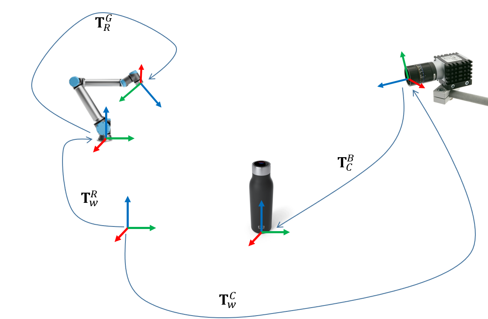

Transformation and trajectory planning
Welcome to the part of the workshop where you will learn how to work with frame transformations and trajectory planning.

Introduction
At the end of this day you will be able to do the following: * Write the relations between coordinate frames in a URDF file * Publish custom transformation either from a Python script or command line * Get the transformation between two arbitrary transforms * Understand the relation between joint state publisher and robot state publisher * Use Rviz to visualize the robot and the coordinate frames * Use Rviz to plan a trajectory that brings the robot from one configuration to another whilst avoiding collisions * Use the MoveIt API to plan and execute robot trajectories * Write a tool to save the current robot state - used for programming robot motions
Transformations
In the first part of this day's workshop, we will learn how can we publish, read and visualize transformations.
TF
From TF's wiki page:
tf is a package that lets the user keep track of multiple coordinate frames over time.
In this part of the workshop, you will learn how we can use TF in practice and what needs to be taken care of.
Where's the information
The transformation data between the various frames is available across two different topics: /tf_static and /tf.
As the name suggests, the /tf_static topic holds the transformation data between frames that are, well, static! Whereas /tf holds the transformation data between frames which relations change. Let's give it a try.
Command line exercise
Open three terminals. In the first terminal, run the following command:
In the second terminal, run the following command:
Leave this two terminals open and switch to the third.
Let's inspect the content of the /tf_static topic:
Ok, now let's retrieve the transformation between world and frame_2. What do you expect to be the result?
Python exercise
Take the following code snipped and let's dig in:
A simple taste of URDF
Robot state publisher
Visualizing transforms in Rviz
Assignment
At the end of this assignment you will have a set of tools that you can use during the practical part of the workshop. So do your best to make it as useful and easy-to-use as possible.
First part of the assignment
Using the joint state publisher and a simulated robot save various joint and Cartesian space configurations into a YAML file
Example of YAML file obtained with this:
Second part of the assignment
Using the YAML that you created in the first part of the assignment you will publish the message that were stored as TransformStamped onto TF.
Next, you will move the simulated robot into these configurations, joint and Cartesian space.
Example code that moves the robot into a joint space configuration that you previously called home: